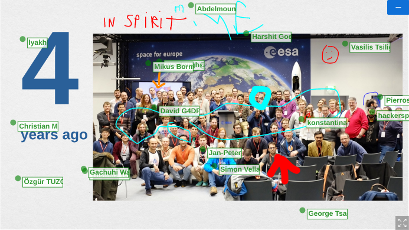
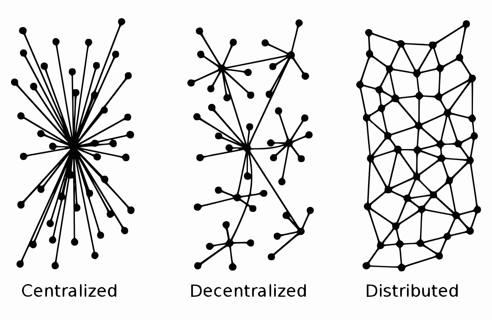
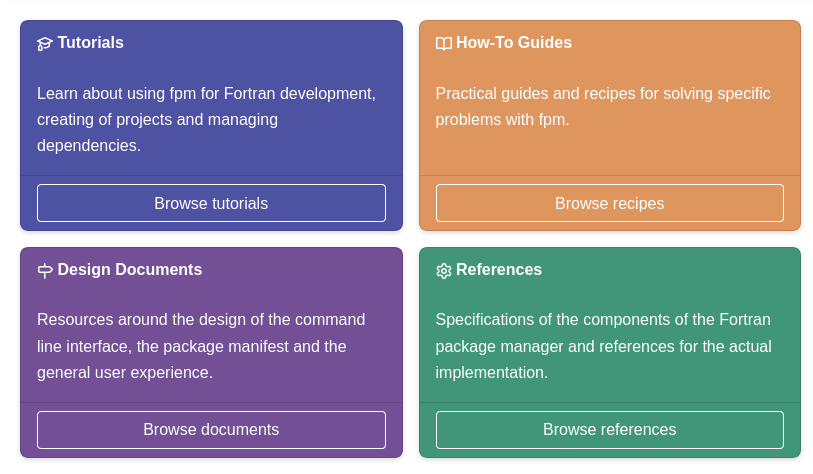

I looked around and found none, do you have any pointers?
In any case, this was also an exercise in creating a Sphinx extension
El 12 de diciembre a las 14:00 UTC impartiré el taller "Documenta tu Proyecto Científico con Markdown, Sphinx, y @readthedocs" en la @ScipyLA en español. ¡Te espero allí! https://twitter.com/ScipyLA/status/1465897063967821825
Replying to @stefanappelhoff, @Mbussonn, @pypi and @readthedocs
Interesting, thanks! I guess the current way is more "modern" and more configurable.
By the way, maybe we should add a `:gh:` alias, apart from `:github:`?
RT @yuvipanda: Thanks to a report by @juanluisback, http://notebooksharing.space now supports filenames with non-ASCII characters! https://t.co/…
Replying to @Mbussonn, @stefanappelhoff, @pypi and @readthedocs
Thanks for the thorough list! Still, I think most of those extensions can be basically achieved with extlinks. The little challenge here was to support {github}`rtfd/rtfd.org#1`, {github}`http://rtfd.org#1`, and {github}`#1` all with the same role.
Replying to @beingrichard_
http://pixabay.com
Replying to @naivebayesian and @pradyunsg
Wondering the same thing...!
Replying to @DanWos, @choldgraf, @pypi, @readthedocs and @poliastro_py
Yeah, I don't even want to get there. Maybe I'm overthinking it, and we should just do it one by one and see what happens?
Replying to @choldgraf, @Mbussonn, @naivebayesian and @pradyunsg
Replying to @naivebayesian, @Mbussonn, @choldgraf and @pradyunsg
Oh well https://discuss.python.org/t/what-is-the-pypa/12297?u=astrojuanlu
Replying to @Marc_Compere, @choldgraf, @naivebayesian and @pradyunsg
setuptools is not going anywhere I believe, but it's deprecating `http://setup.py` scripts. flit is simpler to use, and also is the backend most up to date with all the current declarative standards.
RT @ScipyLA: Juan Luis Cano @juanluisback estará impartiendo el tutorial "Documenta tu Proyecto Científico con Markdown, Sphinx, y Read the…
RT @iamtxena: Thanks for the reference on #qibo & @qilimanjaro on your MUST-read scientist newsletter! Episodio 13 🐍⚙️, by @juanluisback ht…
Para mi audiencia hispanohablante: ¡estoy escribiendo una newsletter sobre Python en ciencia y ciencia de datos! Cada viernes las noticias de la semana en tu bandeja de entrada, ¡suscríbete!
https://astrojuanlu.substack.com/
RT @samlau95: hello world!
we're launching pandas tutor! it visualizes Python pandas code step-by-step: https://pandastutor.com/
(developed…
Replying to @rabernat, @ZENODO_ORG and @github
Going back to this, I think this chicken-and-egg problem has been there forever https://github.com/zenodo/zenodo/issues/276 would be cool to have it better documented though.
Replying to @RagnarokReinier
Hola @RagnarokReinier , ¡gracias por contactar! Encantado de difundir en https://astrojuanlu.substack.com/ 😍 si quieres que pase un enlace con tracking me lo puedes escribir por privado, y si no usaré https://holguin.python.pizza/ directamente. ¡Que vaya muy bien el evento!
Replying to @RagnarokReinier
(No llego a 2022 pero me encantaría asistir en persona 😇 ¡avisen para la edición 2023!)
RT @pythonpizzaconf: We want to thank our sponsor 🌱 @Ecosia!
About our sponsor:
Ecosia is a search engine based in Berlin, Germany. It don…
RT @RagnarokReinier: I just subscribed to Noticiero Python Científico https://astrojuanlu.substack.com/?utm_medium=web&utm_campaign=pss
Feeling sad after finally deleting my @Couchsurfing account. So many good memories!
I think bad experiences and creepy hosts played an important role in the demise of the platform. Is there a CS alternative built around protecting vulnerable travelers, especially women?
Replying to @SciPyIndia, @prabhu_r, @KannanMoudgalya, @iitbombay, @PythonStack, @PythonMumbai, @pythonexpress, @realpython, @ThePSF, @SciPyTip, @py_data_sci, @fullstackpython and @cool_python
Hi! When will acceptance communicated to speakers?
RT @BoscoSoler: En la news de este domingo:
🤷♂️ Cuento por qué no sabía en qué país del mundo voy a dormir hoy
🎓 Sesión de @melanicazorl…
> your package may then need a newer setuptools for Python 3.11 support in Oct'22 for example
https://mail.python.org/archives/list/numpy-discussion@python.org/message/JIN5YSD7CAJACRGXMD3S4S5B5MUDWZVL/
As much as I love living on the bleeding edge, I think the current pace of CPython is somewhat problematic for library authors and wish it moved slower.
RT @jaraco: In two weeks time, the Setuptools project aims to re-introduce local distutils as default (https://github.com/pypa/setuptools/pull/2896). Many envir…
RT @ReaderMeter: At the software citation session at #FORCE2021, learning about the latest updates from the community. GitHub repos with a…
Replying to @maraujop and @lekum
I arrive late to the party but pip-tools is king 😃 welcome back @maraujop !
RT @esc___: Current work plans for 2021++, aside from the usual maintenance tasks:
* M1 support and wheels for Numba/llvmlite
* Python 3.11…
Replying to @muheuenga, @PythonNamibia and @honzajavorek
Congratulations folks! 👏🏼 Just missing the SSL certificate 🤓🔒
RT @muheuenga: 90 % of rebranding of @PythonNamibia website is done. Here is our new domain http://pynam.org/. I am working on the re…
RT @ddbeck: Making up your own fake phone numbers, domains, and other details has risks. Use these instead https://ddbeck.com/fictitious-numbers/?utm_medium=Social&utm_source=Twitter
Replying to @muheuenga, @PythonNamibia, @honzajavorek and @letsencrypt
for the win!
Does @ZENODO_ORG have a "status page"? Having problems with it right now, and looks like I'm not alone https://github.com/zenodo/zenodo/issues/2243
I get that "Zenodo does not sign SLAs" by design, but being more transparent about operational failures and outages would be desirable.
Replying to @KrilleFear
Looks super cool! Will give it a try soon :D
Replying to @yuvipanda and @ZENODO_ORG
Maybe, but I'd expect a 5xx response from Zenodo webhooks in that case, got 202 ACCEPTED instead :/
RT @poliastro_py: 📢 poliastro 0.16.0 released 🚀
Event detectors, new plot_maneuver method, and lots of performance improvements! Read more…
Replying to @paulweveritt, @AdamChainz and @htmx_org
Because we pythonistas are so fond of our tools that we fail to see the good stuff happening elsewhere. Sphinx, Pelican and Nikola are lightyears behind other SSGs in terms of community excitement and extension ecosystem, and we are somewhat content with that.
Replying to @paulweveritt, @AdamChainz and @htmx_org
Damn, one time I even signed up on Reddit just to say that I was hugely disappointed that the web was still running on PHP, largely (IMHO) because deploying Python apps is much more difficult, and everybody just scoffed at me. We gave up on the hard truths.
Replying to @paulweveritt, @AdamChainz and @htmx_org
I could talk about this for *hours*.
Replying to @paulweveritt, @freakboy3742 and @llanga
Not sure if @hynek has given a conference talk on the topic, but he has surely written about it: https://hynek.me/articles/python-in-production/
Replying to @NomadicMobility and @Couchsurfing
Thanks for the pointers!
Replying to @NomadicMobility and @Couchsurfing
Super excited about BeWelcome (seems to be the largest), Couchers (large team, open source, alternative to CS) and Host-a-Sister (glad that there's an initiative focused on women). Thanks again!
RT @DanWos: Just released Sphinx-Preview, which allows you to get a preview of links inside your Sphinx docs.
Pretty nice, if your docs e.…
Replying to @DanWos
Looks great! I'm wondering if you knew https://sphinx-hoverxref.readthedocs.io/ before writing sphinx-preview? Works in a similar way, but using an intermediate backend that parses the HTML fragments and caches the data
Replying to @ivanov
Is this possible on Jupyter Lab? Haven't found the buttons yet...
Replying to @DanWos
Thanks for sharing the context!
Replying to @Fomightez and @ivanov
This is very useful, thanks a lot! Looking forward to seeing tighter integration between RetroLab, Notebook v7, and Jupyter Lab
Replying to @AdinaKrik
Cool progress bar on the left! What Sphinx extension is this?
RT @tdhopper: My team has been trying the Diátaxis framework for documentation with internal docs, and I am a convert.
It's helped me brin…
RT @ScipyLA: ¡Hola gente! Pasando a recordar que la Conferencia Scipy Latin America 2021 rodará este fin de semana 11 y 12 de diciembre, ¡o…
RT @DolbyIO: The amount of audio collected has exploded exponentially in recent years, creating an abundance of unstructured data to explor…
Replying to @github
Was it so difficult to cite @sourcegraph as inspiration?
Permissive licenses for the win!
"In my experience, the most important commodity an open source project needs to succeed is users." http://nipy.org/nipy/faq/johns_bsd_pitch.html https://twitter.com/hadleywickham/status/1468633611444314118
Replying to @ZENODO_ORG
But... but... https://github.com/zenodo/zenodo/issues/2243 :(
RT @poliastro_py: Thrilled to be one more year at #OSCW21! 🚀

Periodic reminder:
Fuck cryptocurrencies. https://twitter.com/choldgraf/status/1468641354100064260
Never understood what people like about Poetry so much. pip-tools works perfectly for freezing environments, it's lightweight and simple. For distributing libraries, flit is kind unless you have some complex compiled extensions. And in the latter case, you have scikit-build. https://twitter.com/uninen/status/1468674427835625484
Replying to @juanluisback
flit is *king
RT @readthedocs: Announcing Embed API v3 and sphinx-hoverxref 1.0 📣
https://blog.readthedocs.com/embed-api-v3/
(Do you want to receive these updates on your…
"Organizations accounts will be offered on a subscription basis. Private organizations will be charged a fixed amount while community projects will avail this feature free of cost."
Interesting! https://twitter.com/pypi/status/1468994112447819786
Replying to @readthedocs and @github
I'm a fan of nbsphinx! https://nbsphinx.readthedocs.io/
RT @ScipyLA: ¡Discord de la conferencia ya está disponible! 🥳🥳🥳 ¡Tener acceso es muy fácil! En el sitio web: https://conf.scipy.lat puede…
RT @davidbrochart: Because it's built on top of FastAPI, Jupyverse has the potential to unlock a new brand of JupyterLab application extens…
Replying to @choldgraf
I am now significantly more confident that online-only conferences make a much smaller impact than in-person ones...
Replying to @choldgraf
Yep, I'm speaking about the present. To be honest I'm not optimistic that the situation will change in the short term: a videoconference has a much narrower bandwidth than real life. I'll be excited when VR headsets are as cheap and widespread as a cheap smartphone.
Replying to @choldgraf
In addition, I think this framing (in-person conferences are expensive) tends to focus too much on big, international conferences.
PyCon Namibia is not expensive... if you live in Windhoek already.
...which reminds me that many parts of the world still don't have good Internet.
Replying to @choldgraf
In summary:
- Online-only: cheap, accessible, but little value.
- Hybrid: very hard, but we must try.
- In-person: not necessarily expensive or carbon-intensive. A local in-person meetup creates social bonds among people that live close, without taking an airplane.
Replying to @choldgraf
Addendum: Not a fan of demonizing air transport. I've seen half a dozen videos from people trying to attend #COP26 by train, and it wasn't fun. Don't think building thousands of kilometers of railways or giving up long-haul travel are realistic solutions. But that's another topic
Replying to @ericholscher and @choldgraf
I also think that we are tricked into thinking that "if it's recorded, we can watch it later". But the Internet is flooded with content, and we rarely find time for that.
I know this self-imposed constraint sounds weird, but maybe conferences should stop uploading recordings :)
Replying to @choldgraf and @ericholscher
Continues here :) https://twitter.com/ericholscher/status/1469066423091666951
Replying to @ocefpaf and @dopplershift
They usually put it there so they can reuse code from the examples or the tests in other examples or tests. And I don't blame them: reusing code in tests involves writing pytest fixtures, which is "weird".
I agree with @ocefpaf and @asmeurer, the problem here is bad defaults.
Replying to @GuenP, @choldgraf and @ericholscher
Absolutely! We tried to do this for @pyconna 2021 but we were in the middle of the pandemic and we were very resource-constrained and exhausted, and local conditions weren't favourable either. I think it can be an awesome experience with proper logistics.
Replying to @GuenP, @choldgraf, @ericholscher and @PyConNA
In my mind, in-person=centralized, "watch parties"/hybrid=decentralized, online=distributed.
Online has easiest logistics, centralized in-person the highest cost. Let's explore decentralized alternatives.

The amount of human knowledge lost in conference papers that are impossible to find, or even buy, online. #phdchat
RT @Mbussonn: @juanluisback @GuenP @choldgraf @ericholscher @PyConNA You also have to consider first timer, I don't think I would have ever…
Replying to @asmeurer, @pganssle, @ocefpaf and @dopplershift
Not interested in reading incorrect opinions about the src layout 😛
Replying to @yabellini
If you have good Internet connection and microphone (which is not a given), and if the online event offers a way to socialize (which is often bad or missing).
After participating in the online organization of @PyConNA 2021, I disagree that online events have better accessibility
Replying to @pganssle, @ocefpaf, @dopplershift and @asmeurer
I don't know, find_packages could introduce deprecation warnings and change the defaults. They've been doing it for some other parts of the API. And folks can always depend on older versions
Replying to @yabellini
It was not directed at me but I feel this kind of metaphors unnecessarily portray folks in a very negative way?
Adding here my opinions, which are not informed by research but by direct experience organizing full-online events in challenging environments. https://twitter.com/juanluisback/status/1469204100055187460
Replying to @yabellini
People in certain regions of the world don't have good means to access online conferences. People in certain age groups feel excluded by technology.
Can we all agree that there are selection and survivorship biases everywhere and recognize that this is a hard problem?
Replying to @driscollis and @jorgemustaine
A sane git log that is useful to look at!
RT @fperez_org: 20y ago today, as a failing physics grad student I posted @IPythonDev 0.2.0. This opened the door to an incredible communit…
Replying to @_lacion_, @ericholscher and @choldgraf
Yes! I've benefitted from it too. Thanks to the online format, I could attend big events that usually take place in the US (SciPy, Write the Docs).
The whole point is that there is a tradeoff between reach, social bonding, logistics complexity, engagement. We need nuanced debate
Replying to @yabellini
It was not my intention to turn this into a credentials competition, but to state that speaking in absolutes is harming nuanced debate.
My experience is different than yours, and that's a good thing. Neither is invalidated. Let's keep collectively trying to make sense of this.
RT @reshamas: An all too common scenario is folks who were once active, and now remain on project as non-contributing for an extended and s…
Replying to @reshamas
Thanks for your kind words @reshamas ♥️ I have witnessed lots of the problems you point out in the thread. To avoid them, I'm trying to learn (the hard way) to say "no" more often, and also to confront existing commitments I can no longer have and step aside in a graceful way.
Replying to @_lacion_, @ericholscher and @choldgraf
I'm out of this debate folks, my opinions don't fit in a series of tweets :) Hope we find the venue to properly discuss these details at length some time
RT @poliastro_py: Some takeaways after the wonderful (as always) #OSCW21:
- We need better integration of TLEs in poliastro
- We need to e…
Replying to @MVirizuela and @ecanrog
Interesante estudio https://psyarxiv.com/j49zg gracias por el enlace (y por las referencias a Lendakaris Muertos)
@Teatro_Real ¿Hoy no hay Último Minuto para Amigos Jóvenes para La Bohème? 😢
RT @ScipyLA: "Documenta tu Proyecto Científico con Markdown, Sphinx, y Read the Docs" - Juan Luis Cano
@juanluisback
"Análise de Séries…
My last talk of the year is over! Thank you @ScipyLA #scipyla21 for organizing the event one more year and inviting me, and hopefully see you soon! https://twitter.com/ScipyLA/status/1470042077668986881
Finally! https://twitter.com/marcwouts/status/1470068422310567944
RT @yisel_clavel: #PythonPizzaHolguín2022 en el Noticiero Python Científico Episodio 14 🐍⚙️🚀 (Edición especial OSCW), by @juanluisback http…
Replying to @DavidStansby, @jezdez and @choldgraf
I concur, it would be nice to have more information on the compensation (salary range? different ranges depending on seniority? location-based?)
After several bad experiences, I took a stance of not applying or sharing job offers without salary information attached to them.
RT @LGFunderburk: En menos de 12 horas daré el tutorial para @ScipyLA
Ética en inteligencia artificial, una introducción a @fairlearn
Re…
Replying to @aleks_nenadic, @SoftwareSaved and @thecarpentries
✋🏼✋🏼✋🏼✋🏼😀
RT @readthedocs: myst-parser 0.16.0 ships
⬆️ full compliance with the CommonMark v0.30 spec
✨ support for field lists (paving the way to M…
Hot take: I'm actually okay with companies making money off open-source and don't give anything back.
...But then, when shit happens, they must remember:
THE SOFTWARE IS PROVIDED "AS IS"
(by the way, I'm against huge monopolies in general, regardless of their usage of F/LOSS) https://twitter.com/psycopg/status/1470377106613981184
RT @dhh: “Stop viewing open source as this purely transactional, market-based exchange. Open source has the power to break us free from thi…
Replying to @SevaUT
What for? To throw most of it away? https://twitter.com/___inCANdescent/status/1470078857969553408
Replying to @TheUnshored and @plaindocs
Something like https://www.pandora.com but specialized on, errr production?
Replying to @quansightai and @ProjectJupyter
It would be nice to have more information on the compensation (salary range? different ranges depending on seniority? location-based yes/no?)
(Not for me, but for anybody else applying)
Replying to @melissawm
Hahaha what's this?? 😅
Possibly relevant: https://github.com/executablebooks/meta/discussions/549
Replying to @giswqs and @banesullivan
Do you mean like https://github.com/poliastro/czml3#jupyter-widget ? :)
(Haven't touched it in a while, happy to receive feature requests and feedback)
Replying to @giswqs and @banesullivan
CZMLWidget(simple, ion_token="...")
let me know if it works!
RT @pdm_project: We have a new benchmark page on https://pdm.fming.dev/dev/benchmark/ comparing with Pipenv and Poetry, check it out.
Replying to @giswqs and @banesullivan
Should be fixed by https://github.com/poliastro/czml3/pull/99 !
RT @PamphileRoy: SciPy 1.8rc1 is out! Tons of fixes and new features like: UNURAN distribution samplers, sparse array API and PROPACK suppo…
Replying to @Geenimetsuri and @Sydonahi
I used to use F2PY a lot, and within its limitations, it works great! Last time I looked though it didn't support FORTRAN 2003 features, or even F95 derived types. I think @melissawm has been giving it some love lately, but the code is a big mess 😀
Replying to @rg0swami, @melissawm, @Geenimetsuri and @Sydonahi
I must be a weirdo then, I like both! :D
Replying to @giswqs and @banesullivan
Aaaaaaaaaand there we go! https://twitter.com/poliastro_py/status/1470794149943255047
RT @rg0swami: @juanluisback @melissawm @Geenimetsuri @Sydonahi Fantastic! Not just F2PY, but Fortran-Foreign interfaces are coming along sw…
RT @lfortranorg: LFortran Minimum Viable Product (MVP) just released. This is a big milestone for us. Thank you everybody for supporting us…
RT @ivybarley: Getting into tech, one advice you will often hear is that you should build a portfolio of projects and contribute to open so…
RT @LibreSpace_Fnd: 📌Special thanks go to @getindico @bigbluebutton @matrixdotorg & @element_hq for making 𝗧𝗵𝗲 𝗢𝗽𝗲𝗻 𝗦𝗼𝘂𝗿𝗰𝗲 𝗖𝘂𝗯𝗲𝗦𝗮𝘁 𝗪𝗼𝗿𝗸𝘀𝗵𝗼𝗽…
RT @readthedocs: Customizable webhooks, improved audit logs on Corporate, documentation improvements, and more: read our December newslette…
Replying to @fortranlang
I love spotting @evildmp's Diataxis in the wild :)

RT @ringo_ring: nature has actually contacted me for comment about accusations that Sci-Hub is a threat, here is my full response / it is c…
https://celer.bandcamp.com/track/could-i-not-be-saved-after-all-that
$ pip install --no-cache-dir -r reqs.txt
Collecting setuptools==47.1.0
Downloading setuptools-47.1.0-py3-none-any.whl (583 kB)
Installing collected packages: setuptools
...
Successfully installed setuptools-58.2.0
😳
Replying to @pradyunsg
21.3.1 https://readthedocs.org/projects/pyrsgis/builds/15519595/
Replying to @pradyunsg
All that build seems really busted, but at the same time I don't understand how could it end up in that situation. It's a bit of work to reproduce the exact environment locally, might give it a try later...
RT @matplotlib: With academic conference in full swing, please let us know if we're present in your poster/presentation!
Replying to @juanluisback
Also, many are an "open alternative to X", which sets goals and helps define the roadmap. Closed-source isn't evil: it paved the way for this.
(It isn't always like this of course, but it's definitely the pattern for the apps cited in this particular Twitter thread)
This thread is just awesome. Commercial open source is blooming ♥️
What excites me about the "commercial" part is that these teams are forced to provide excellent UX to succeed, and that is giving us awesome products that are also open. https://twitter.com/chatwootapp/status/1471032737951719426
RT @pyblogsal: My GitHub Sponsors profile is live!🚀 If you enjoy my work on better error messages 🖥️ for CPython (featured in Python 3.10)…
Replying to @ixek, @quansightai and @ProjectJupyter
To clarify: when I said location-based, I was also referring to the salary (i.e. is it based on the job/seniority? or does the place you live modify the number too?)
In any case, thanks a lot!
RT @hpcprogrammer: Fortran is not legacy.
Replying to @brettsky
I'd love to use --only-binary, but there is always some tiny dependency without a wheel... there are still too many gaps here https://pythonwheels.com/
Replying to @ZJAyres
"The good thing about leaving things for the last minute, is that you only spend a minute!"
Replying to @the_compiler
"most" and "increasing" are doing a lot of heavy lifting there
RT @carmen_TM_: 3️⃣⤵️ Procesos judiciales:por último, si no estás conforme con el resultado anterior y puedes permitírtelo, tu periplo acab…
Replying to @TerraMeijar
They don't get it, but because they already ask while thinking "this is too complicated and I'm not going to ever understand whatever explanation they give". So, I try to compare it with something else.
Developer Advocate = Salesman/Community Manager 😅
But yeah, it's hard!
RT @RyanKeisler: I talk to a fair number of people coming from astronomy and cosmology backgrounds who are thinking about a career move. He…
RT @pycoders: It's Time to Stop Using Python 3.6 https://bit.ly/3m9SpQl
Replying to @EvenRouault
Modern Fortran is not so weird, but I agree that old FORTRAN codebases can be painful to deal with
Replying to @dopplershift
Duplication is not important if tooling takes care of it. After ~10 years of using pip, I discovered this week that `npm install` automatically (1) installs lib, (2) adds lib to requirements, and (3) generates a lock file. I have high hopes on @pdm_project
RT @martinRenou: Early Christmas gift 🎁🎄🎅😍
@matplotlib 's interactive back-end #ipympl 0.8.4 is out!
- Fade-in fade-out effect on the too…
TIL: https://github.com/ome/ngff https://twitter.com/notjustmoore/status/1471819187156918275
RT @goanpeca: Feliz cumple @reydelhumo 🎂!!! Acá desde Colombia te pensamos mucho con @juanluisback. Ojalá la siguiente foto sea de los tres…
Replying to @goanpeca and @reydelhumo
Ufff cómo estuvo esa picada 😍 ¡Espero que volvamos a coincidir los tres pronto!
RT @lunasorcery: things developers love to get mad about:
- tabs vs spaces
- vim vs emacs
- comic sans
- unnecessary use of `cat`
- windows…
RT @poliastro_py: It's here! Our new how-to guide to load OMM and TLE satellite data with poliastro 🛰️
https://docs.poliastro.space/en/latest/examples/Loading%20OMM%20and%20TLE%20satellite%20data.html
(Data cour…
Replying to @cdonnellySRE
RT @ericholscher: Each organization considering investing in open source (a tiny minority of total OSS users) will prioritize their Return…
RT @ericholscher: Solving open source sustainability just requires *a lot more money in the system*. We need to improve the ways we're mark…
RT @evgenymorozov: Brian Eno's outbursts against NFTs are quite fun to read - in our new interview just published in @cryptosyllabus https:…
Replying to @trklou and @Prusa3D
Congrats ♥️
Replying to @DanWos, @ericholscher and @opencollect
In what ways do you think @opencollec could be improved? Just curious, I'm very interested in this
Just spotted PR #10001 on #sphinxdoc. Congratulations! 🥳
Replying to @DanWos, @ericholscher and @opencollect
If I understand correctly, fiscal hosts (in our case https://opencollective.com/europe) can create invoices. They don't "do the business" though, hosted projects are supposed to do it.
Is your concern its nonprofit nature, or the fact that they don't have humans doing administrative work?
Replying to @DanWos, @ericholscher and @opencollect
Sorry, we branched the thread :) https://twitter.com/juanluisback/status/1473300140064661506
Requesting approval from @pradyunsg and @jaraco for this paragraph 😅 Where do I get my "More or less understands Python packaging" certificate? https://twitter.com/readthedocs/status/1473319660363735046
Replying to @kamromero, @asdrubalivan and @gusrojasmatute
En Venezuela faltan tests de antígenos + "España es Venezuela" + "Madrid es España dentro de España", por tanto... ¿Ayuso es bolivariana? 😵💫😵💫😵💫
No sé cómo nos las apañamos para politizar el COVID-19... pero aquí estamos 😓 ¡Abrazos Kamal, cuídate!
Replying to @kamromero
Jaj, asumí cosas porque leí la bio del principio "Venezuelan economist", me sentó mal el café de la mañana 😂
¡Todo bien, y sigo en Madrid! No te preocupes que tengo planes de organizar algún meetup, te mantendré informado :) ¡Abrazos!
Replying to @pganssle and @llanga
I don't understand what semver has to do with upper version pinning in general. One can have such pinning with calver or any other versioning scheme.
On the other hand, I don't quite like the library vs application framing. "Intended audiences" would be more productive IMHO.
Replying to @fishnets88
Where can we see this in action? :D
Replying to @fishfulpenguin and @elementary
Doesn't Wayland still struggle with screen sharing?
Also, from a user perspective, any practical advantages over X? Does it have better performance somehow?
RT @pdm_project: We are happy to announce the release of PDM 1.2.0, with a bunch of improvements, enjoy the holiday!
https://t.co/CU9gsx3dl…
I updated my (yet another) cookiecutter for Python libraries! Check it out: https://github.com/astrojuanlu/cookiecutter-pylib
Replying to @jacobian
Hmmm now I'm worried that something has gone wrong with Stickermule?
Replying to @jacobian
All I want for Christmas is this tweet on a t-shirt so I can wear it at *every* community conference I attend. https://twitter.com/SwiftOnSecurity/status/1067685326729170944
Replying to @DanWos
Coming back to this. Isn't this what Tidelift does? (Not 100 % sure because I'm not a client, nor a maintainer paid by them)
RT @hynek: “Always remember that to argue, and win, is to break down the reality of the person you are arguing against. It is painful to lo…
"Python is no longer a small language [...] It’s easy to say, “Just ignore decorators and async I/O and the := operator in class,” but that’s disingenuous. Newcomers will bump into these things as soon as they search online for help" https://twitter.com/gvwilson/status/1475128276515540992
Replying to @Mbussonn
Amazing changelog! Looking forward to seeing the new tracebacks. Do they collide with the Python 3.11 improvements?
Also, velin is awesome, I gave it a try for @poliastro_py and it found lots of stuff to fix
Replying to @nschloe
I doubt it's going to be as big as SciPy :) All together!
RT @hynek: I’m very excited to announce attrs 21.3.0 that among other great features FINALLY ships `import attrs`.
This is a step I’ve bee…
Replying to @isaacjordana and @Renfe
Correcto, menos mal que por teléfono contestaron rápido. En fin.
"I can only presume that the b is short for bullshit" 🔥 https://mail.python.org/pipermail/python-list/2021-December/904690.html (via https://pyherald.com/ cc @osdotsystem)
Replying to @ocefpaf and @pganssle
And what about calling out witty responses like this one? https://twitter.com/codewithanthony/status/1475500313088040965 Shutting down feedback because potentially everybody, including fellow maintainers, is a dumb "today in open source" bro does not seem like the best way to collectively advance the state of the art.
Replying to @pradyunsg, @ljmf00, @codewithanthony and @Edberg_Wardman
You'll be surprised to know that the subtweeted issue is about not adding pyproject.toml support to flake8 because pip will trigger build isolation in its presence https://github.com/PyCQA/flake8/issues/1501
Replying to @ocefpaf and @pganssle
re: lack of context https://twitter.com/juanluisback/status/1476212830579965956
tl;dr: pip won't allow users to opt-out build isolation if the project contains a pyproject.toml + parsing several config files is messy + no TOML parser in stdlib = no pyproject.toml support on flake8.
Replying to @michaelwaskom
delenda est metaclasses
RT @PamphileRoy: Who wants to be the 9000 person to star #scipy? Considering lots of our dependencies have more stars, I am sure we can mak…
RT @AdamMGrant: Sexual harassment isn't driven by a desire for women. It's motivated by a desire for power over women.
Data: assertive wom…
RT @ralfgommers: Update: Meson support is now merged in SciPy master (https://github.com/scipy/scipy/pull/14847). Feels good, right before the end of the yea…
Exciting times! https://twitter.com/ralfgommers/status/1476311378843607040
Replying to @pradyunsg
Replying to @rdbisme
Hey! "Same style" would be easy by choosing a theme, for "search over everything", have a look at @readthedocs subprojects! https://docs.readthedocs.io/en/stable/subprojects.html#search
Replying to @rdbisme and @readthedocs
All @readthedocs is open source :) But the functionality is not part of core #sphinxdoc, since it's more of a hosting/operations thinghy https://github.com/readthedocs/readthedocs.org/blob/c3b4bef6bde1b0717da19d5504749edaa68c7045/readthedocs/search/api.py#L221-L223 I understand that you could replicate it with some effort.
Did I already say that @numba_jit is awesome? https://twitter.com/leland_mcinnes/status/1476661085445013511
RT @readthedocs: Document all the things 📖 Happy new year 2022! https://twitter.com/DynamicWebPaige/status/1477011811341942788